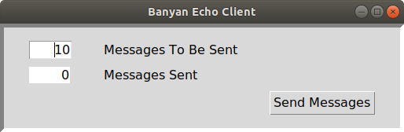
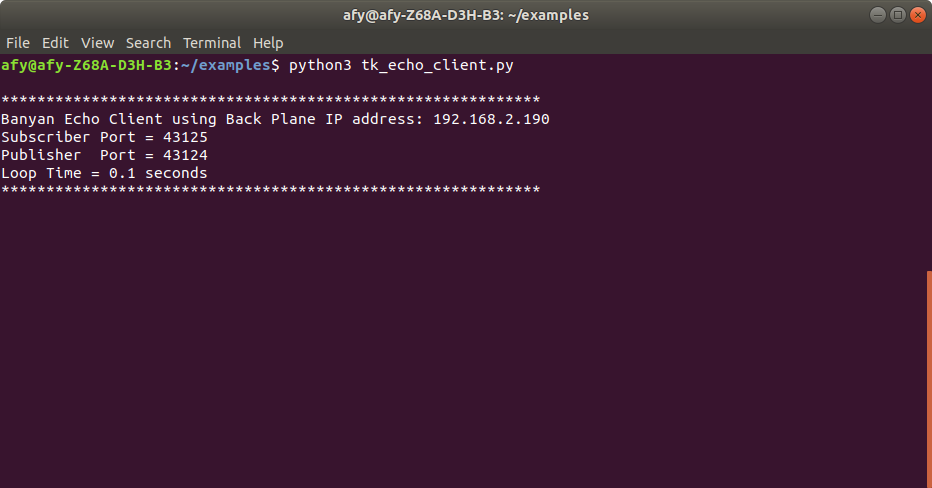

Creating A Banyan GUI Component

In this section, we will demonstrate how to create a Banyan compatible GUI client for the simple echo server example.
Both Banyan and GUI frameworks are implemented using event loops. Because only one event loop can run within any given thread of execution, we need to find a way for both event loops to coexist.
One solution is to create a multi-threaded application with each event loop running in its own thread. This, however, introduces unnecessary complexity and complicates the testing and debugging efforts.
If you are using a GUI that provides a callback hook to allow you to link your own code into the GUI's event loop, a much simpler solution is at hand. The tkinter GUI framework provides such a hook, and we will integrate Banyan into our GUI using this technique. Note that many other GUI frameworks also provide a callback hook, and the techniques shown here may be applied similarly to those frameworks. The remi library, for example, uses a method called idle to provide the callback hook.
The tkinter callback hook method is called after. We will pass in 2 parameters to after, a sleep time in milliseconds, and the user callback function that is called after the sleep time expires.
The example code shown below illustrates integrating the Banyan receive_loop into the GUI event loop using the after method. Some discussion of tkinter will be provided for clarity. However, a detailed discussion of the tkinter framework is beyond the scope of this document. This ebook offers a concise and useful discussion of building GUIs with tkinter.
Running The Example
Make sure that backplane and server are running. Next start tk_echo_client.py. After starting the GUI client code, you should see the GUI shown at the top of this section appear on your screen, and the console should display something similar to this:

If you press the "Send Messages" button, you should the "Messages Sent" field update to a value of 10. If you start the Monitor before pressing the "Send Messages" button, you can verify the contents of the messages.
Exploring The Example Code
The code is shown below.
Importing tkinter
Lines 27 through 34 handle the tkinter differences for Python 2 and 3 and allow a single code source to service both tkinter versions.
Lines 37 through 39 import not only the BanyanBase class but MessagePack and ZeroMQ. Our GUI component needs direct access to these packages because portions of the Python Banyan receive_loop will be placed in the tkinter mainloop.
Lines 62 through 68 prepare for initializing the parent BanyanBase class on line 71.
Lines 77 and 78 subscribe to all topics of interest.
Breaking Into The GUI Event Loop
Line 149 uses the tkinter after method. The first parameter specifies a delay in milliseconds before the callback function specified by the second parameter is called.
In this example, the callback function is the get_message method defined on line 156. This method is essentially the same code normally run in the BanyanBase receive_loop. It checks to see if there any Banyan messages to process, and if there are, it processes them. If there are no messages available, line 169 re-arms the tkinter after method to check for Banyan messages within the GUI event loop.
1 #!/usr/bin/env python
2
3 """
4 tk_echo_client.py
5
6 Copyright (c) 2016-2019 Alan Yorinks All right reserved.
7
8 Python Banyan is free software; you can redistribute it and/or
9 modify it under the terms of the GNU AFFERO GENERAL PUBLIC LICENSE
10 Version 3 as published by the Free Software Foundation; either
11 or (at your option) any later version.
12 This library is distributed in the hope that it will be useful,
13 but WITHOUT ANY WARRANTY; without even the implied warranty of
14 MERCHANTABILITY or FITNESS FOR A PARTICULAR PURPOSE. See the GNU
15 General Public License for more details.
16
17 You should have received a copy of the GNU AFFERO GENERAL PUBLIC LICENSE
18 along with this library; if not, write to the Free Software
19 Foundation, Inc., 51 Franklin St, Fifth Floor, Boston, MA 02110-1301 USA
20
21 """
22 from __future__ import unicode_literals
23
24 import time
25
26 # python 2/3 compatibility
27 try:
28 from tkinter import *
29 from tkinter import font
30 from tkinter import ttk
31 except ImportError:
32 from Tkinter import *
33 import tkFont as font
34 import ttk
35
36 import sys
37 import umsgpack
38 import zmq
39 from python_banyan.banyan_base import BanyanBase
40
41
42 # noinspection PyMethodMayBeStatic,PyUnresolvedReferences,PyUnusedLocal
43 class TkEchoClient(BanyanBase):
44 """
45 A graphical echo client.
46 """
47
48 def __init__(self, topics=['reply'], number_of_messages=10,
49 back_plane_ip_address=None, subscriber_port='43125',
50 publisher_port='43124', process_name='Banyan Echo Client'):
51 """
52
53 :param topics: A list of topics to subscribe to
54 :param number_of_messages: Default number of echo messages to send
55 :param back_plane_ip_address:
56 :param subscriber_port:
57 :param publisher_port:
58 :param process_name:
59 """
60
61 # establish some banyan variables
62 self.back_plane_ip_address = back_plane_ip_address
63 self.subscriber_port = subscriber_port
64 self.publisher_port = publisher_port
65
66 # subscribe to the topic
67 if topics is None:
68 raise ValueError('No Topic List Was Specified.')
69
70 # initialize the banyan base class
71 super(TkEchoClient, self).__init__(back_plane_ip_address=back_plane_ip_address,
72 subscriber_port=subscriber_port,
73 publisher_port=publisher_port,
74 process_name=process_name)
75
76 # subscribe to all topics specified
77 for x in topics:
78 self.set_subscriber_topic(str(x))
79
80 # setup root window
81 self.root = Tk()
82 # create content window into which everything else is placed
83
84 self.root.title(process_name)
85 self.content = ttk.Frame(self.root, borderwidth=5,
86 relief="sunken", padding=12)
87
88 # use a grid layout
89 self.content.grid(column=0, row=0, sticky=(N, S, E, W))
90
91 self.content.columnconfigure(0, weight=1)
92 self.content.rowconfigure(0, weight=1)
93
94 # setup some display variables
95
96 # messages to be sent
97 self.messages_to_be_sent = StringVar()
98 self.messages_to_be_sent.set('10')
99
100 # messages sent count
101 self.messages_sent = StringVar()
102 self.message_sent_count = 0
103 self.messages_sent.set(str(self.message_sent_count))
104
105 # set up font variant
106 self.larger_font = font.Font(size=12)
107
108 # add the widgets
109 ttk.Label(self.content, font=self.larger_font, text="Messages To Be Sent").grid(column=3, row=1, sticky=W)
110 ttk.Label(self.content, font=self.larger_font, text="Messages Sent").grid(column=3, row=2, sticky=W)
111
112 style = ttk.Style()
113 style.configure("BW.TLabel", foreground="black", background="white")
114
115 ttk.Label(self.content, font=self.larger_font,
116 textvariable=self.messages_sent,
117 width=5,
118 anchor=E, justify=RIGHT, style="BW.TLabel").grid(column=2, row=2, sticky=W)
119
120 self.to_send_entry = ttk.Entry(self.content, width=5,
121 font=self.larger_font,
122 textvariable=self.messages_to_be_sent,
123 justify='right')
124 self.to_send_entry.grid(column=2, row=1, sticky=(W, E))
125
126 s = ttk.Style()
127 s.configure('my.TButton', font=self.larger_font)
128
129 self.send_button = ttk.Button(self.content, text="Send Messages",
130 command=self.send, style='my.TButton')
131 self.send_button.grid(column=4, row=3, sticky=W)
132
133 for child in self.content.winfo_children():
134 child.grid_configure(padx=20, pady=5)
135
136 self.to_send_entry.focus()
137 self.root.bind('<Return>', self.send)
138
139 self.number_of_messages = number_of_messages
140
141 # sequence number of messages
142 self.message_number = self.number_of_messages
143
144 # send the first message - make sure that the server is already started
145 # self.publish_payload({'message_number': self.message_number}, 'echo')
146 self.message_number -= 1
147 self.root.protocol("WM_DELETE_WINDOW", self.on_closing)
148
149 self.root.after(1, self.get_message)
150
151 try:
152 self.root.mainloop()
153 except KeyboardInterrupt:
154 self.on_closing()
155
156 def get_message(self):
157 """
158 This method is called from the tkevent loop "after" call. It will poll for new zeromq messages
159 :return:
160 """
161 try:
162 data = self.subscriber.recv_multipart(zmq.NOBLOCK)
163 self.incoming_message_processing(data[0].decode(), umsgpack.unpackb(data[1]))
164 self.root.after(1, self.get_message)
165
166 except zmq.error.Again:
167 try:
168 time.sleep(.0001)
169 self.root.after(1, self.get_message)
170
171 except KeyboardInterrupt:
172 self.root.destroy()
173 self.publisher.close()
174 self.subscriber.close()
175 self.my_context.term()
176 sys.exit(0)
177 except KeyboardInterrupt:
178 self.root.destroy()
179 self.publisher.close()
180 self.subscriber.close()
181 self.my_context.term()
182 sys.exit(0)
183
184 def incoming_message_processing(self, topic, payload):
185 # When a message is received and its number is zero, finish up.
186 if self.message_number == 0:
187 self.messages_sent.set(str(self.number_of_messages))
188
189 # bump the message number and send the message out
190 else:
191 self.message_number -= 1
192 self.message_sent_count += 1
193 self.messages_sent.set(str(self.message_sent_count))
194
195 # account for python2 vs python3 differences
196 if sys.version_info[0] < 3:
197 self.publish_payload({'message_number': self.message_number}, 'echo'.encode())
198 else:
199 self.publish_payload({'message_number': self.message_number}, 'echo')
200
201
202 def send(self, *args):
203 msgs = self.to_send_entry.get()
204 # reset the sent count variables to zero
205 self.message_sent_count = 0
206 self.messages_sent.set(str(self.message_sent_count))
207
208 # set current message number to the number of messages to be sent
209 self.message_number = int(msgs)
210
211 # update the number of messages to be sent
212 self.number_of_messages = int(msgs)
213
214 # account for python2 vs python3 differences
215 if sys.version_info[0] < 3:
216 self.publish_payload({'message_number': self.message_number}, 'echo'.encode())
217 else:
218 self.publish_payload({'message_number': self.message_number}, 'echo')
219
220 def on_closing(self):
221 """
222 Destroy the window
223 :return:
224 """
225 self.clean_up()
226 self.root.destroy()
227
228
229 def gui_client():
230 TkEchoClient()
231
232
233 if __name__ == '__main__':
234 gui_client()
Copyright (C) 2017-2020 Alan Yorinks All Rights Reserved